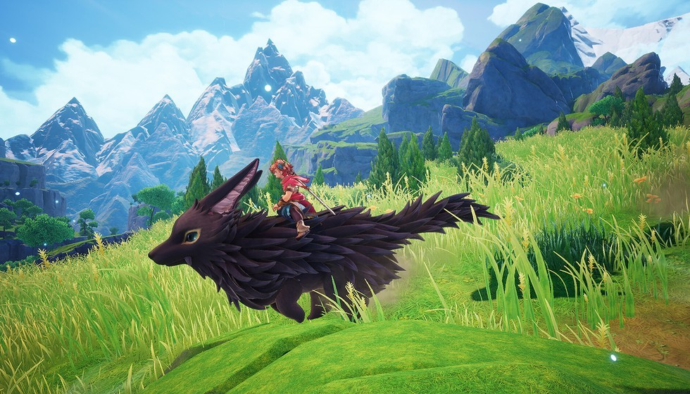

塞尔达》之外的神作！这款 90 年代 ARPG 终

提到动作 RPG，很多老玩家下意识会喊出海拉鲁大陆的名字。但你是否还记得 90 年代曾站在巅峰的另一座大山？那时的掌机屏幕上，《圣剑传说》用黑白像素证明了动作与成长的魅力。如今，这部被“遗忘”的经典竟通过硬核技术手段重回 NS，这让无数老玩家心头一震——原来经典的复活方式不止官方移植一条路！
毕竟在那个黑白的像素时代……91 年史克威尔在 GB 上推出的初代《最终幻想外传》，就靠着角斗士主角与玛娜女神之女的羁绊杀穿全场。虽然受限于容量画面简陋，但那种纯粹的动作手感早已刻进 DNA 里。谁能想到它后来能和塞尔达比肩？看着如今重制版的温暖画风，真让人有些物是人非的唏嘘感。
若你细品那八种武器的搭配……主角手握斧头砍树、流星锤破墙或是鞭子钩物的设计，绝不是简单的花架子，而是将工具属性玩明白了的现代教学范本。这种“多功能工具流”对现代游戏设计的启示太深刻了——在如今那些单纯堆砌画面的 3A 大作中已稀缺无比。咱们国内主机玩家不应只盯着画面升级，更要关注这种低成本高回报的玩法智慧，毕竟扎实的基础设计才是 RPG 的灵魂所在。
这种“逆时代”的操作……社区大神用开源代码‘缝合’经典的行为本身就是一种极客精神的胜利。从 GitHub 上下载源码到大气层平台运行，民间技术圈早已把“复活”变成了现实。这比官方冷冰冰的跳票更懂玩家对情怀的渴望——当大厂还在权衡成本时，他们却先把那份久违的热血还给了咱们。
哪怕只有英文界面……面对目前暂无中文版的现状，与其抱怨缺字库，不如理解这是一种纯粹的单机体验回归。在主机圈，这种需要玩家自己动手解锁乐趣的模式，反而过滤掉了真正的硬核受众。虽然配置语言包略显折腾，但这股子钻研劲儿不正是老玩家该有的样子吗？
当玛娜女神的光芒再次照亮世界，我们是否也找到了当年那个纯粹的自己？不管画面黑白还是全彩，那份热血从未冷却。或许我们玩腻了剧情注水的快餐 RPG，才更需要在这样一个简陋却充满诚意的世界里寻找那份久违的纯粹感动——毕竟，拯救世界的不是画质，而是那颗未死的游戏初心。各位老玩家觉得这部作品在 NS 上还有哪些遗憾之处吗？欢迎在评论区留下你的故事，咱们一起聊聊如何守护这份经典记忆！
关于我们
📱 公众号名称：三天游戏
✍️ 作者：曾三天
扫码关注公众号，获取每日最新资讯

商务合作与版权
商务合作 / 内容投稿 / 品牌推广
请关注公众号「三天游戏」后台留言联系
版权声明：本文由作者整理，转载需注明出处。